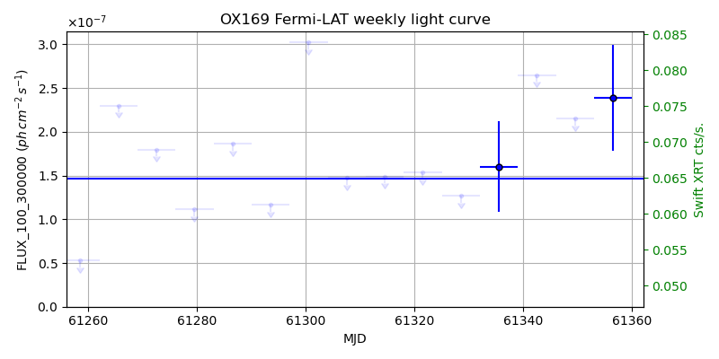
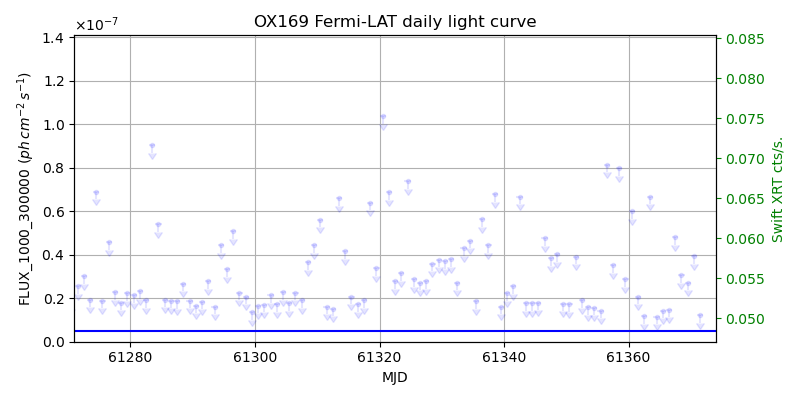
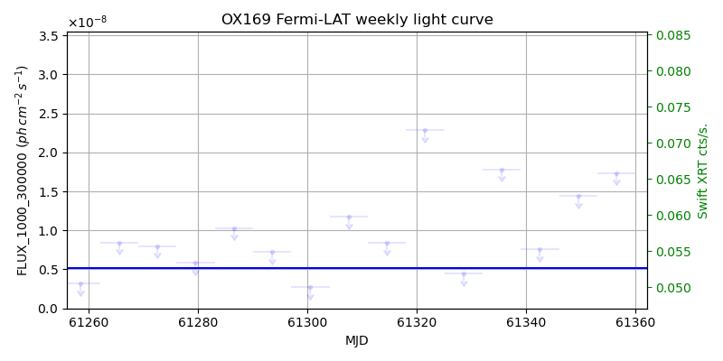

LAT Lightcurve site: https://fermi.gsfc.nasa.gov/ssc/data/access/lat/msl_lc/source/OX_169
Swift site: https://www.swift.psu.edu/monitoring/source.php?source=S32141+17
NED: Query
Time of last update of this page: UT: 2026-11-20 16:28 (MJD: 61364.687)
| Property | Value |
|---|---|
| R.A. | 21:43:35.52 |
| Dec. | 17:43:48.0 |
| z | 0.211 |
| 3FGL SpectrumType | LogParabola |
| 3FGL PL Index | |
| 3FGL Flux_100_300000 | 1.46e-07 1 / (s cm2) |
| 3FGL Flux_1000_300000 | 5.15e-09 1 / (s cm2) |
| 3FGL Flux >200 GeV | 5.61e-13 1 / (s cm2) |
| 3FGL Extrap. Crab >200 GeV | 0.00 |
| 3FGL Flux After EBL Absorption >200GeV | 3.06e-13 1 / (s cm2) |
| 3FGL EBL Crab Fraction >200GeV | 0.00 |
| MJD | dMJD | Flux | dFlux | Frac3FGL | FracCrab>200GeV | EBLFracCrab>200GeV |
|---|---|---|---|---|---|---|
| 61359.50 | 0.50 | 1.14e-06 | 0.00e+00 | 0.00 | 0.00 | 0.00 |
| 61360.50 | 0.50 | 5.27e-07 | 0.00e+00 | 0.00 | 0.00 | 0.00 |
| 61361.50 | 0.50 | 5.33e-07 | 0.00e+00 | 0.00 | 0.00 | 0.00 |
| 61362.50 | 0.50 | 6.25e-07 | 0.00e+00 | 0.00 | 0.00 | 0.00 |
| 61363.50 | 0.50 | 5.49e-07 | 6.20e-08 | 3.76 | 0.01 | 0.01 |

| MJD | dMJD | Flux | dFlux | Frac3FGL | FracCrab>200GeV | EBLFracCrab>200GeV |
|---|---|---|---|---|---|---|
| 61328.50 | 3.50 | 1.27e-07 | 0.00e+00 | 0.00 | 0.00 | 0.00 |
| 61335.50 | 3.50 | 1.60e-07 | 5.19e-08 | 1.09 | 0.00 | 0.00 |
| 61342.50 | 3.50 | 2.65e-07 | 0.00e+00 | 0.00 | 0.00 | 0.00 |
| 61349.50 | 3.50 | 2.15e-07 | 0.00e+00 | 0.00 | 0.00 | 0.00 |
| 61356.50 | 3.50 | 2.39e-07 | 6.04e-08 | 1.64 | 0.00 | 0.00 |

| MJD | dMJD | Flux | dFlux | Frac3FGL | FracCrab>200GeV | EBLFracCrab>200GeV |
|---|---|---|---|---|---|---|
| 61359.50 | 0.50 | 2.87e-08 | 0.00e+00 | 0.00 | 0.00 | 0.00 |
| 61360.50 | 0.50 | 6.01e-08 | 0.00e+00 | 0.00 | 0.00 | 0.00 |
| 61361.50 | 0.50 | 2.07e-08 | 0.00e+00 | 0.00 | 0.00 | 0.00 |
| 61362.50 | 0.50 | 1.17e-08 | 0.00e+00 | 0.00 | 0.00 | 0.00 |
| 61363.50 | 0.50 | 6.67e-08 | 0.00e+00 | 0.00 | 0.00 | 0.00 |

| MJD | dMJD | Flux | dFlux | Frac3FGL | FracCrab>200GeV | EBLFracCrab>200GeV |
|---|---|---|---|---|---|---|
| 61328.50 | 3.50 | 4.46e-09 | 0.00e+00 | 0.00 | 0.00 | 0.00 |
| 61335.50 | 3.50 | 1.78e-08 | 0.00e+00 | 0.00 | 0.00 | 0.00 |
| 61342.50 | 3.50 | 7.62e-09 | 0.00e+00 | 0.00 | 0.00 | 0.00 |
| 61349.50 | 3.50 | 1.44e-08 | 0.00e+00 | 0.00 | 0.00 | 0.00 |
| 61356.50 | 3.50 | 1.73e-08 | 0.00e+00 | 0.00 | 0.00 | 0.00 |
--------------------------------------------------------- Using user-supplied coords: 21:43:35.52 17:43:48.0 2000 --------------------------------------------------------- FLWO UT night of: 2026-11-21 Local Sid. @ Midnight: 03:37 Sunset (-15.0) (local, UT): 18:33 01:33 Sunrise (-15.0) (local, UT): 05:47 12:47 Moonrise (local, UT): Moonset (local, UT): 03:40 10:40 Moon phase: 0.85 --------------------------------------------------------- AzTime LSID UT Obj_el Obj_az Mn_el Mn_az Sep. --------------------------------------------------------- 18:33 22:09 01:33 75.1 203.0 47.9 117.4 43.2 19:03 22:39 02:03 71.5 224.8 53.3 125.0 43.3 19:33 23:09 02:33 66.5 239.1 58.2 134.7 43.4 20:03 23:39 03:03 60.7 248.7 62.3 146.9 43.5 20:33 00:09 03:33 54.6 255.7 65.1 162.1 43.6 21:03 00:39 04:03 48.4 261.3 66.3 179.7 43.7 21:33 01:09 04:33 42.0 266.0 65.4 197.5 43.8 22:03 01:39 05:03 35.6 270.1 62.9 213.2 43.9 22:33 02:09 05:33 29.2 273.9 59.0 225.9 44.0 23:03 02:39 06:03 22.9 277.5 54.2 235.9 44.1 23:33 03:09 06:33 16.6 281.1 48.9 243.9 44.3 00:03 03:39 07:03 10.4 284.7 43.2 250.4 44.4 00:33 04:10 07:33 4.3 288.5 37.3 255.9 44.5 01:03 04:40 08:03 -1.0 292.4 31.2 260.7 44.7 01:33 05:10 08:33 -7.7 296.5 25.1 265.1 44.9 02:03 05:40 09:03 -13.3 301.1 19.0 269.2 45.0 02:33 06:10 09:33 -18.6 306.0 12.9 273.0 45.2 03:03 06:40 10:03 -23.6 311.5 6.8 276.9 45.4 03:33 07:10 10:33 -28.2 317.7 1.0 280.7 45.7 04:03 07:40 11:03 -32.2 324.5 -4.9 284.7 45.9 04:33 08:10 11:33 -35.6 332.1 -11.1 288.8 46.1 05:03 08:40 12:03 -38.1 340.5 -16.8 293.2 46.4 05:33 09:10 12:33 -39.8 349.5 -22.3 298.1 46.7 05:47 09:25 12:47 -40.2 353.9 -24.8 300.5 46.8 --------------------------------------------------------- Dark hours >55 deg.: 0.00